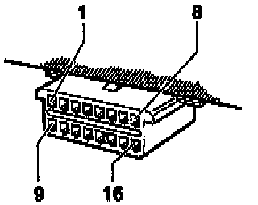

Diagnostic Connector - ABS
Diagnostic Link Connector Pin Identification:

Terminal 4 = Ground (GND) (Terminal 31)
Terminal 7 = K wire via junction box TV14 (above relay panel), connector T2d/2 to ABS control module -J104- terminal 42.
Terminal 16 = Battery positive voltage (B+) (terminal 30) via -S22-.